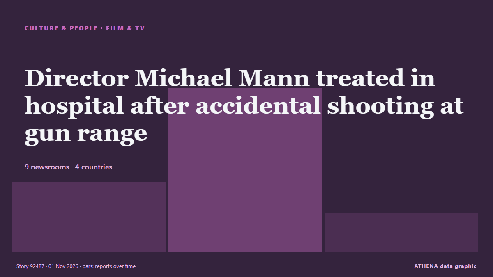

Культура, люди и стиль жизни
Заголовки приводятся на английском языке, как они были опубликованы.

Кино и ТВDirector Michael Mann treated in hospital after accidental shooting at gun range
The incident reportedly took place during a training session at the Los Angeles range on Saturday. из Evening Standard (London)
| 19 окт. | 0 |
|---|---|
| 20 окт. | 0 |
| 21 окт. | 4 |
| 22 окт. | 4 |
| 23 окт. | 11 |
| 24 окт. | 13 |
| 25 окт. | 6 |
| 26 окт. | 48 |
| 27 окт. | 72 |
| 28 окт. | 74 |
| 29 окт. | 74 |
| 30 окт. | 73 |
| 31 окт. | 43 |
| 1 нояб. | 20 |
Best Celebrity Halloween Costumes: Kim Kardashian as North West, Paris Hilton as Britney Spears and More
Halloween and Hollywood go hand in hand, especially given that most costumes draw inspiration from entertainment. из Variety
Harry Styles dresses as viral ‘pizza rat’ for final Madison Square Garden show
His band continued the theme by dressing up as New York City landmarks and references. из Evening Standard (London)
James Bond actor Ben Whishaw says franchise ‘needs to be reinvented’
The 46-year-old has starred in three James Bond films alongside Daniel Craig as the character of Q. из Evening Standard (London)
After Louvre Heist and String of Thefts, Europe’s Smaller Museums Are on Guard
Europol said museum thefts were becoming more forceful and increasingly focused on precious metals and gemstones. из The Straits Times
US rapper Macklemore launches 'Free Palestine Tour'
Macklemore launches his Free Palestine Tour in Dublin after Ed Sheeran drops him, drawing sold-out crowds and pro-Palestinian support. из The New Arab
Celebrity Traitors star Maya Jama praised for ‘generous donation’ to charity
The 32-year-old revealed she made a donation to Action for Children on Saturday. из The Irish News (Belfast)
Patrick Stewart, Star Trek and X-Men actor, dies at 86
Sir Patrick Stewart, the acclaimed British actor best known for playing Captain Jean-Luc Picard in Star Trek: The Next Generation and Professor Charles Xavier in the X-Men film franchise, has died at… из Gulf News
Romesh Ranganathan and Sebastian Croft relieved Celebrity Traitors win is out
The actor, 24, and comedian Romesh Ranganathan were crowned the winners of the BBC reality show on Friday. из The Irish News (Belfast)
UK PM ‘open’ to slavery apology but not reparations
Andy Burnham made the remarks days before attending a Commonwealth leaders summit in Antigua and Barbuda, as King Charles III tours the Caribbean. из Free Malaysia Today
Macklemore says he was unable to ‘stay silent’ about Israel-Palestine conflict
The US rapper performed at the OVO Arena Wembley on Friday night. из The Irish News (Belfast)
Robert Downey Jr. & Pedro Pascal Serve MCU Role Reversal For Halloween: “Costume Swap!”
With less than two months left on the Avengers: Doomsday clock, Robert Downey Jr. and Pedro Pascal swapped sides for Halloween. из Deadline
Halloween Mirrors Spooky Beliefs of the Ancient Greeks
Could Halloween, the annual celebration observed in numerous countries across the world on October 31, have ancient Greek roots? из Greek Reporter
The Dachshund Is the Muse in an Exhibition Showcasing the Sausage Dog’s History in Art
BREMEN, Germany (AP) — The humble dachshund is taking center stage in a new exhibition in Germany that explores the history of the sausage dog in art — and visitors are welcome to bring their… из The Canadian Press (via CityNews)
Inde Navarrette Takes Swipe at Shane Gillis During ‘SNL’ Monologue
Following a Trump-centric cold open that featured the return of Tom Hanks’ David S. из Variety
The unsung heroes of snake antivenom production
There are the hidden figures working behind the scenes in the music industry. из IOL
Indian Filmmaker Sanjay Gupta Dies: ‘Kaante’ Director Was 57
Sanjay Gupta, the Indian director best known for the crime drama films Kaante and Shootout at Lokhandwala, died Friday, October 30, after a fall at his home in Mumbai. из Deadline
King Charles to address Commonwealth with 'unflinching honesty' amid slavery focus
European traders enslaved 12.5 million Africans, including 3.2 million transported by Britain. из Express Tribune
Test your Halloween movie knowledge with our spooky quiz
It's officially spooky season! But how well do you really know your slashers? из ABC News Australia
Mahama visits Kente Exhibition by Russia-Ghana Parliamentary Forum in Moscow
President John Dramani Mahama on Thursday visited the Kente Exhibition by the Russia-Ghana Parliamentary Forum as part of the official activities surrounding the Third Russia-Africa Summit in Moscow. из MyJoyOnline
2026 Daytime Emmy Awards: ‘General Hospital’ Wins Best Daytime Drama
'The Kelly Clarkson Show' won a leading five awards, as 'Beyond the Gates' also took home four trophies. из The Hollywood Reporter
Gardaí identify man found dead at recycling centre
Gardaí believe unidentified male may have been murdered, says source. из The Irish Times
Deep Purple postpones shows as Ian Gillan hospitalised for ‘medical emergency’
Shows in Leipzig and Hamburg were called off as the 81-year-old singer was hospitalised. из The Irish News (Belfast)
Fallon Sherrock speaks out after criticism over £501,000 Luke Littler win
The Netflix show saw Luke Littler take on a number of amateur contestants who were trying win £501,000. из Liverpool Echo
What time is The Celebrity Traitors on? Here's when you can watch the final episode
Here is the exact time The Celebrity Traitors 2026 final is on tonight. из The Scotsman
Angel Studios CCO Lays Out “Values-Based” Initiative Banning Sex, Nudity, F-Words & “Misuse Of God’s Name”: “Hollywood Lives In A Bubble”
Angel Studios, the production company behind Sound of Freedom, Cabrini, His Only Son and The... из The Citizen (Tanzania)
Three or four checks, then one big raid: How a Puchong chicken warehouse that flouted halal rules ran for 20 years
KUALA LUMPUR, Oct 31 — A chicken slaughtering and processing warehouse in Puchong, raided under Ops Taring Chiller... из Malay Mail
Kelly Osbourne pays tribute to Ozzy on her birthday: ‘I wish you were here’
The media personality shared a photo of the pair hugging on a couch. из The Irish News (Belfast)
Paula McIntyre recipes: Now’s the time and plaice for whole baked fish
Cosy and comforting staples to make with kids. из The Irish News (Belfast)
Worcester family shares daughter's story as twin dies at seven-weeks-old
Sophia was born with only half a heart and lived for nearly two months. из Birmingham Mail
Former Chinese Vice Premier Liu Yandong passes away at 81
Former Chinese Vice Premier and State Councilor Liu Yandong passed away due to illness at the age of 81 in Beijing at 2:53 p.m. из CGTN (China)
‘Time is the fire in which we burn’: 2 major cast losses rock the passionate ‘Star Trek’ universe
One of the countless memorable lines that have tumbled out of the “Star Trek” universe over the years is this gem, originally from a 20th-century poet named Delmore Schwartz: “Time is the fire in… из The Canadian Press (via CityNews)
AND2BLE Sell Over Half A Million Copies In A Day With Sophomore EP
AND2BLE sold 523,970 copies of ‘Sequence 02: Attraction’ on its first day, more than tripling their debut album's first day and setting a career-best for the K-pop group. из Forbes Business
Before captain, a king: The dramatic life of Patrick Stewart
Before he shot to Star Trek superstardom, a young Patrick Stewart toured Australia as an ensemble actor. из ABC News Australia
Eurovision 2027 to Feature 36 Countries as Canada Debuts
Burgas, Bulgaria, will host the 71st Eurovision Song Contest on May 11-15, with Canada set to compete for the first time and North Macedonia returning after a four-year absence. из to vima